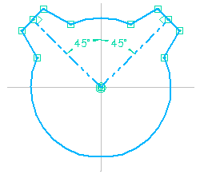
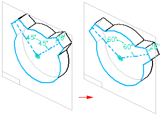

Working with construction geometry
You can use construction geometry to help you draw and constrain a profile, but the construction geometry is not used to construct the surfaces for the feature. When the feature is created, the construction geometry is ignored.
Use one of the following methods to create construction geometry:
-
Use the Create as Construction command
 on the Sketching tab to change the mode to construction. All sketch elements created in this mode
are construction elements. Click the command again to return to profile element mode.
on the Sketching tab to change the mode to construction. All sketch elements created in this mode
are construction elements. Click the command again to return to profile element mode. -
For 2D elements you draw in a part or assembly document, you can specify that the element is a considered a construction element. Use the Construction command
 on the Sketching tab to change selected sketch elements to construction elements. Construction elements
are not used to construct features—they are used only as drawing aids.
on the Sketching tab to change selected sketch elements to construction elements. Construction elements
are not used to construct features—they are used only as drawing aids.
-
Construction elements use the double-chain line style so you can distinguish them from other elements.
-
For example, you can use 45 degree construction lines to control the location of the tabs on the profile or sketch.

-
The construction lines make it easier to edit the location of the tabs, but the construction lines are not used to produce the solid model.
